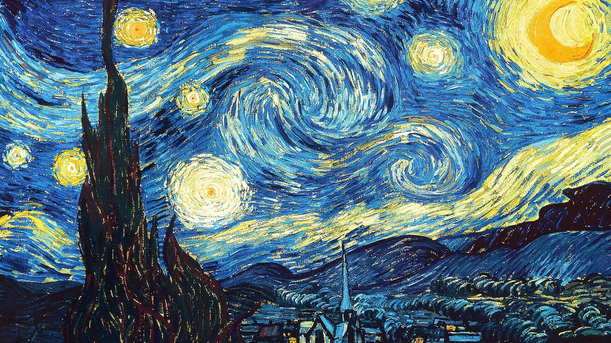
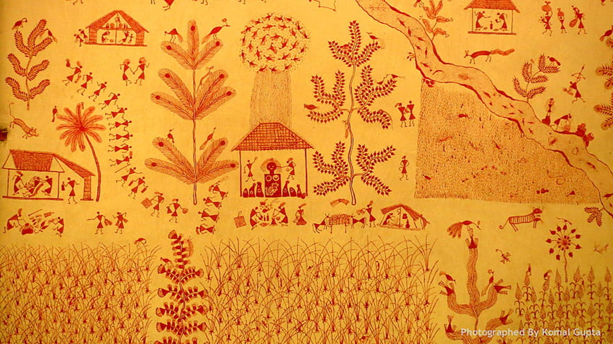
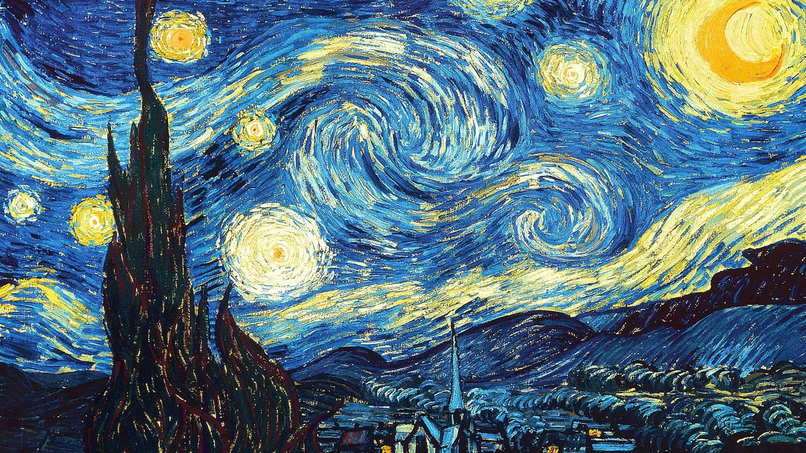
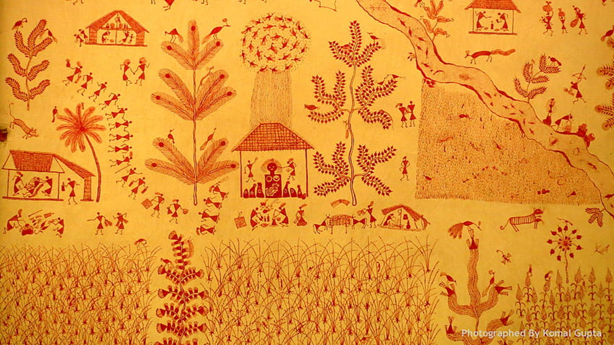

Water Color
Watercolor painting is a technique where pigments are suspended in water to create beautiful artworks.
Artists use watercolor paints on specialized paper, applying them with brushes to create various effects.
Techniques include wet-on-wet, wet-on-dry, dry brush, and layering.
Watercolor allows for transparent layers, vibrant colors, and subtle washes.
It's a versatile medium suited for landscapes, portraits, still life, and more.
With practice and experimentation, artists can achieve stunning results and express their creativity with watercolor.
Read More
Pencil Sketch
Pencil sketching is an art form where artists use graphite pencils to create drawings.
They utilize various techniques like hatching, cross-hatching, blending, stippling, and contour drawing to achieve different effects.
Starting with light lines and gradually building up darker tones, artists can create depth and detail in their sketches.
Pencil sketching is versatile, allowing for the portrayal of various subjects, from landscapes and portraits to still life and abstract concepts.
It's a fundamental skill for artists and a medium that offers both simplicity and complexity in expression.
Read More
Oil Paintings
Oil painting is a traditional and widely practiced art form where pigments are mixed with drying oils like linseed or walnut oil to create vibrant and long-lasting artworks.
Artists apply oil paints onto surfaces such as canvas, wood, or paper using brushes, palette knives, or fingers.
Techniques include layering, glazing, impasto, and blending, allowing for a range of textures and effects.
Oil paints have a slow drying time, enabling artists to work on their pieces over extended periods, blending colors and refining details.
This medium offers rich color saturation, depth, and versatility, making it suitable for diverse subjects and styles.
Read More
Warli Paintings
Warli painting is a traditional Indian art form originating from the Warli tribe of Maharashtra.
It features simple geometric shapes like circles, triangles, and lines to depict scenes from tribal life, nature, and folklore.
Using a white pigment made from rice paste or chalk, artists create intricate patterns on mud walls, cloth, or paper.
The paintings often portray rituals, ceremonies, and everyday activities, showcasing the tribe's cultural heritage and spiritual beliefs.
Warli art is characterized by its rhythmic patterns, minimalistic style, and symbolic representation of the interconnectedness between humans, animals, and nature.
It's celebrated for its rustic charm and storytelling qualities.
Read More
 


